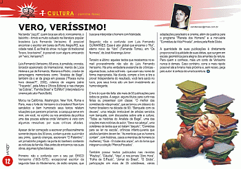
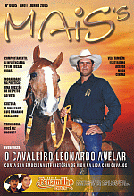

Na
banda “Jazz 6”, quem toca sax
alto é, ironicamente, o baixinho -
tímido e muito cultuado na literatura
popular brasileira – Luís Fernando
Veríssimo. É possível
encontrar o escritor em bares de Porto Alegre/RS,
sua cidade natal. E ao final do show, no lugar
do tradicional "bravo, bravíssimo",
é possível ouvir alguns arriscando
um "vero, Veríssimo"!
Luís Fernando Veríssimo, 68
anos, é jornalista, cronista, torcedor
apaixonado do Internacional, marido de Lúcia
Helena e pai de Fernanda, Mariana e Pedro,
criador de personagens memoráveis como
“Analista de Bagé”, também
dá o ar da graça em poesias
(“Poesia numa hora dessas?!”,
2002), roteiros de viagens (série “Traçando”,
pela Artes e Ofícios Editora) e nas
charges “as Cobras”, “Família
Brasil” e “Ed Mort” (interpretado
no cinema pelo ator Paulo Betti).
Morou na Califórnia, Washington, New
York, Roma e Paris, mas o forte de Veríssimo
é o brasileiro! Num tom sarcástico
e bem humorado seus textos relatam situações
que parecem próximas: a carapuça
serve em mim, em você, no vizinho ou
nos arredores da política – uma
das poucas esferas onde Veríssimo é
visto com algumas ressalvas por suas críticas
afiadas.
Apesar de ter começado a escrever profissionalmente
somente depois dos 30 anos, contam que ele,
sua irmã e seu primo, quando crianças,
escreviam “O Patentino”: um jornalzinho
pregado na porta do banheiro contando as notícias
da família. Mas antes de entrarmos
nas suas obras, algumas lições
básicas: Primeiro: não o confunda
com o seu pai: ÉRICO Veríssimo
(1905-1975): excepcional escritor da segunda
fase do Modernismo, de estilo simples, que
buscava interpretar o homem com fidelidade.
Segundo: não o confunda com Luis Fernando
GUIMARÃES. Esse é ator global
que encarna o “Rui”, eterno noivo
da “Vani” (Fernanda Torres), em
“Os Normais”, de José Alvarenga
Júnior.
Terceiro e último: aqueles textos que
recebemos no e-mail provavelmente não
são do Luís Fernando Veríssimo.
Há uma verdadeira avalanche de crônicas
- algumas boas, outras sofríveis -
que usam seu nome de forma inapropriada. Na
dúvida, compre o livro e tire a prova!
Independente do resultado, você terá
saído no lucro, pois seus livros são
um bom investimento ao humor elegante.
E livro é o que não falta: são
mais de 50 publicações para
todos os gostos. A seguir, alguns títulos
para curtir nas férias ou presentear
com classe: “O melhor das comédias
da vida privada”, que se tornou um clássico
do humor brasileiro na década de 90;
“Banquete com os deuses”, uma
relação irretocável de
artistas servidos num banquete, com discussões
sobre arte e cultura; “Todas as histórias
do Analista de Bagé”, uma das
criações mais notórias
do autor; “Sexo na cabeça”,
uma coletânea de textos que só
tratam “daquilo”; “Comédias
para se ler na escola”, crônicas
infanto-juvenis que adultos também
devem ler; “As mentiras que os homens
contam”, com histórias, casos
e mentiras de homens (e mulheres); “Gula
- O clube dos anjos”, um do livros que
integram a coleção “Plenos
Pecados”.
Também possui textos publicados nas
revistas “Playboy”, “Cláudia”,
“Veja”, e nos jornais “Zero
Hora”, “Folha de S.Paulo”,
“Jornal do Brasil”, “O Globo”,
participação em mais de 35 coletâneas,
várias adaptações para
teatro e cinema, além de quadros para
o programa "Planeta dos Homens"
e a mini-série "Comédias
da Vida Privada", ambos pela Rede Globo.
A quantidade de suas publicações
é diretamente proporcional à
qualidade de suas idéias, que surgem
em escala geométrica para alegria dos
amantes da leitura. Para quem o conhece, mais
um conto de Veríssimo nunca é
demais. Caso contrário, corra o mais
rápido possível até a
livraria mais próxima e, sem receio,
peça pelo autor: é certeza de
uma boa leitura.